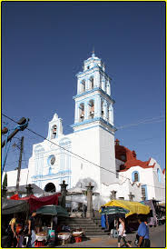
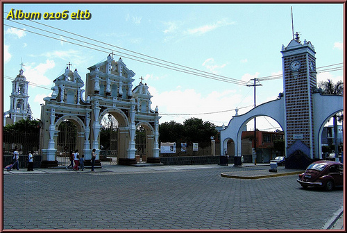
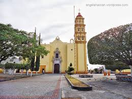

'TEMPLOS'
Ahora hablaremos sobre los Templos mas antiguos o mas representativos de la ciudad de Izucar de Matamoros, como lo es el Templo de Santa Maria de la Asuncion, el Santuario de
Santiaguito, o el famoso Ex Convento de Santo Domingo, son Templos muy llamativos y Hermosos, muy grandes y con una gran estructura, algunos de estos de gran atencion por su
conexion que tienen con las haciendas cercanas o al rededor de la misma region, es importante señalar que el templo del Santo Domingo es muy Grande, quizas el mas grande la
Region, ahora nos adentraremos mas en lo que son los templos, merecidos ser visitados sin alguien visita esta Region, pues son lugares muy turisticos muy representativos de la
misma.!!!
'SANTA MARIA DE LA ASUNCION'
Parroquia: Santa María de la Asunción
Zona Pastoral: Sur
Decanato: Matamoros
Dirección: 5 de Mayo # 28
Colonia: Centro
Ciudad/Municipio: Izucar de Matamoros, Puebla
CP.: 74400
Tel: (243) 436 05 40 /(243) 436 04 61

'SANTUARIO DE SANTIAGUITO'
Parroquia: Santiago Apostol
Direccion:Centenario,Centro, Izucar de Matamoros, Puebla
Colonia:Centro
C.P:74400 Izúcar de Matamoros, Pue.
Decanato: Matamoros
Horario: 8:00 a 16:00 hrs

'EXCONVENTO DE SANTO DOMINGO'
Nombre: Templo de Santo Domingo
Rama: Arquitectura
Subtipo: Barroco
Tipo: Colonial
Fue fundado en el siglo XVII; el claustro tiene características con tendencias góticas.
Templo y Ex-Convento de Santo Domingo, se le conoce así, porque el Convento fue habitado por la orden de Dominicos.
Se inició su construcción en 1612 desconociéndose cuando se terminó: con estilo neoclásico.
Su construcción fue dirigida por los frailes dominicos.
Ubicación: Calle Independencia y Benito Juárez.
Ferias: Festividades y eventos; Religiosas el 8 de Agosto.
ubicado en el Barrio del Perro, es uno de los templos de la ciudad que tienes que visitar.
Telefono: 01 243 432 8566

Santa Maria de la Asuncion
Santa Maria de la Asuncion
Santiago Apostol
Santiago Apostol
Santiago Apostol
Santo Domingo
Santo Domingo
Santo Domingo